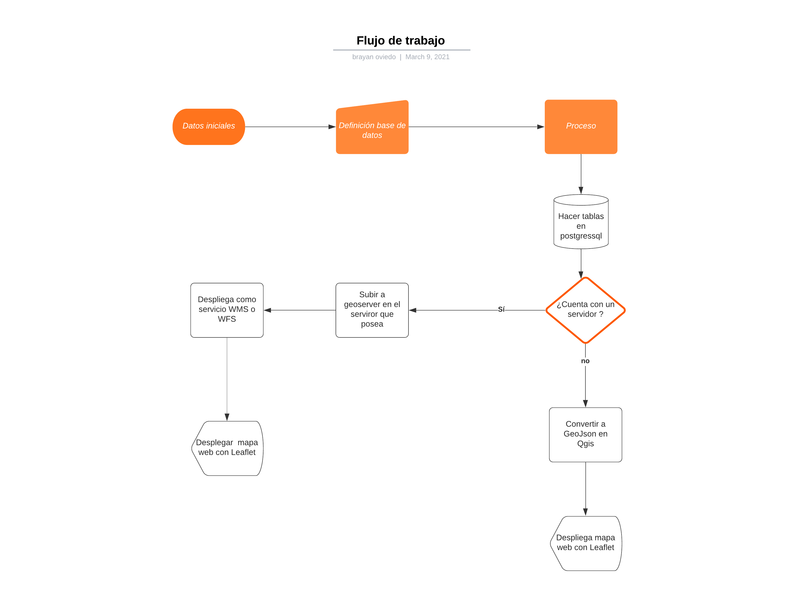
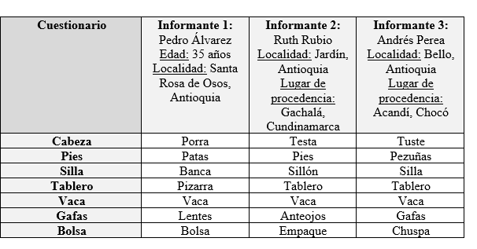
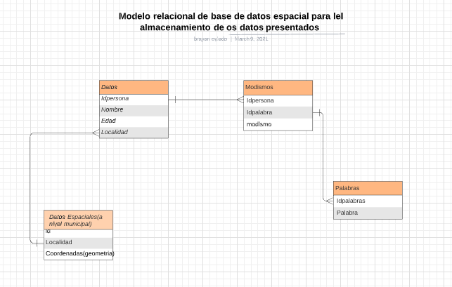
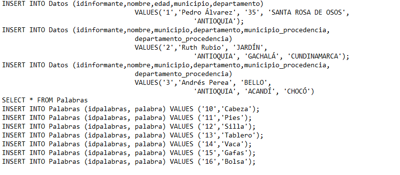
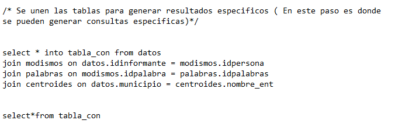
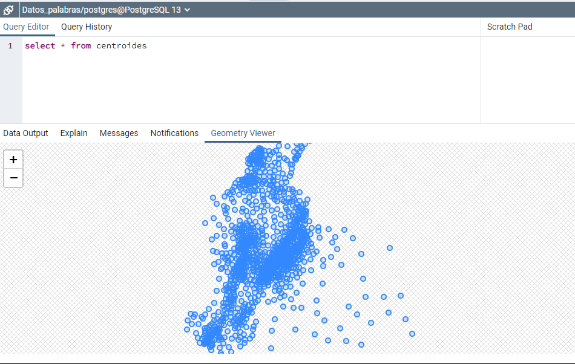
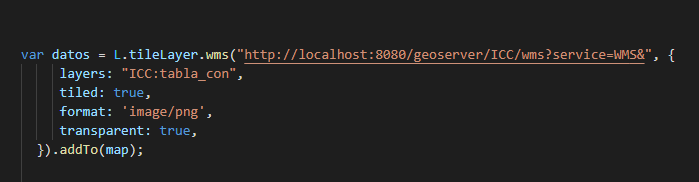
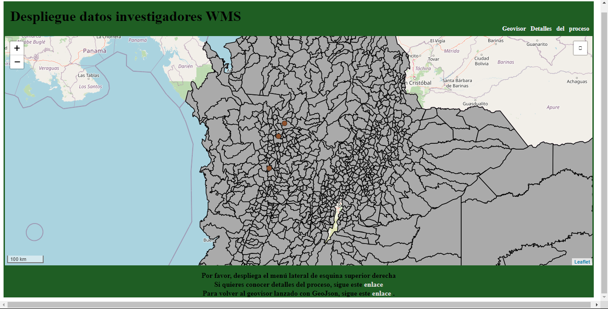

Flujo de datos
Se presentan el flujo de trabajo de los datos para la realización de la prueba de conocimiento.
Preparando la base de datos
Datos iniciales
Desde los datos iniciales se puede observar que hay una relevancia con respecto a la localización, por lo cual se hace necesario prestar especial atención a la componente espacial de las relaciones. Estas se harán mediante un Join por el campo del nombre. Mientras que los otros campos se relacionarán entre si mediante diferentes id.
Modelo entidad- relación
En la siguiente imagen se puede observar la conceptualización del modelo entidad relación que será creado en postgressql usando también la extensión espacial postgis.
Creando la base de datos en Postgis
Posteriormente, en postgressql se crean las tablas correspondientes en una base de datos previamente creada

Y se le añaden los datos correspondientes.
Posteriormente, se añade la capa espacial a la base de datos, se extraen los centroides y se hace un join para que cada registro de la base de datos tenga información espacial. Cada registro estará geolocalizado con respecto al centroide del municipio del cual hace parte.
Generando la siguiente capa:
Por último, como resultado de los join, se genera la capa que será llevada a geoserver para su despliegue posterior

Enlazando el WMS a leaflet y desplegando el mapa web
En este punto, se hace uso de la función L.Tilemap() que trae los datos del servicio WMS al navegador. Recordando que los WMS despliegan imagenes, si bien el despliegue de pop ups es posible, requiere de algunas funciones externas a Leaflet como lo son Jquery y AJAX.
Por último, se añade al mapa con la función .addTo(Map) y ya quedan desplegados los datos del WMS en el geovisor y el mapa se despliega, cuando geoserver se encuentra activo, de la siguiente manera
